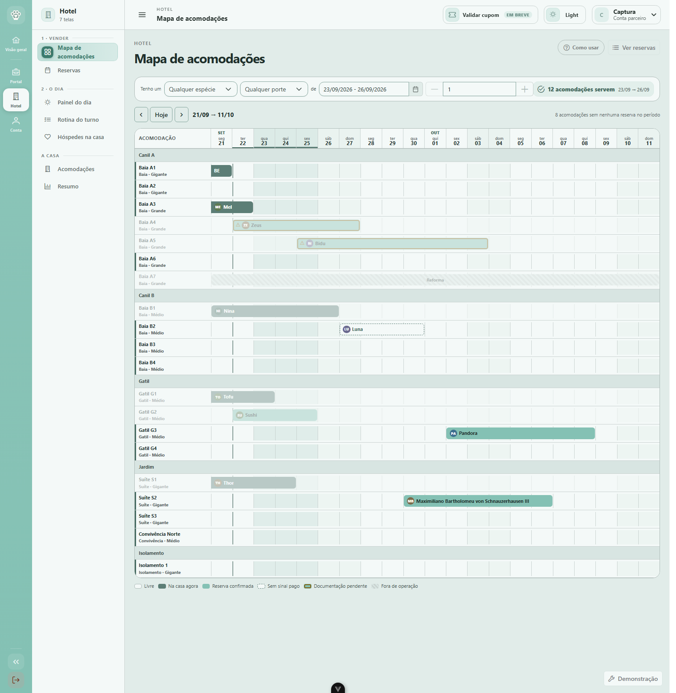
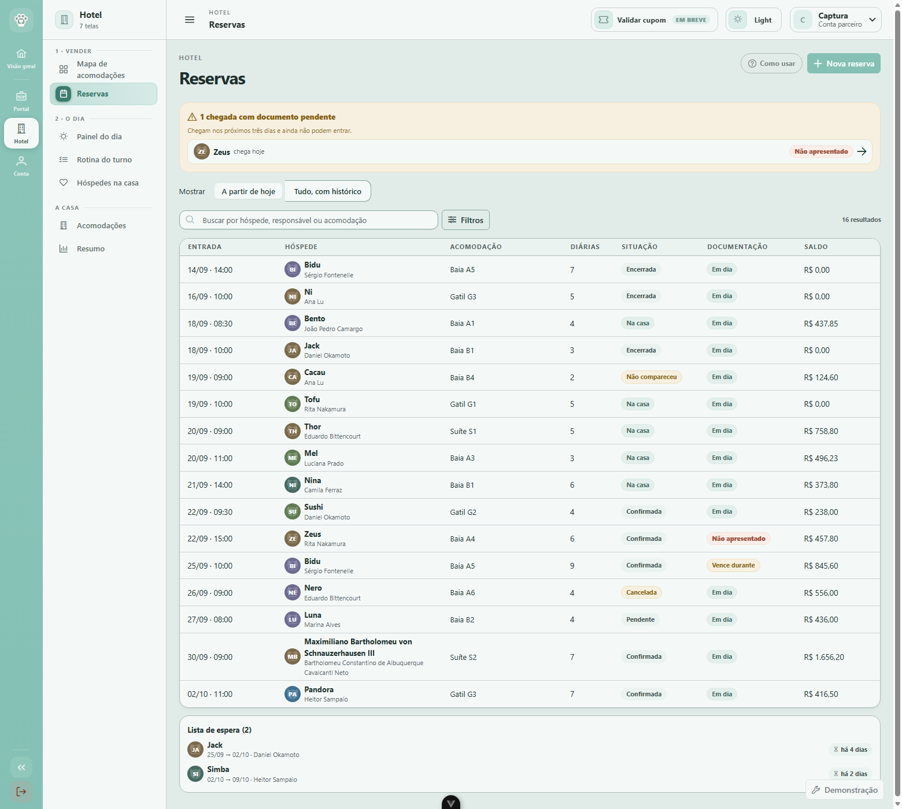
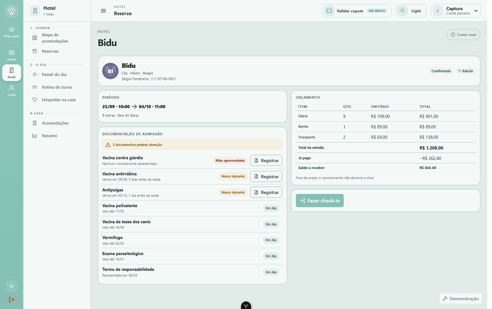
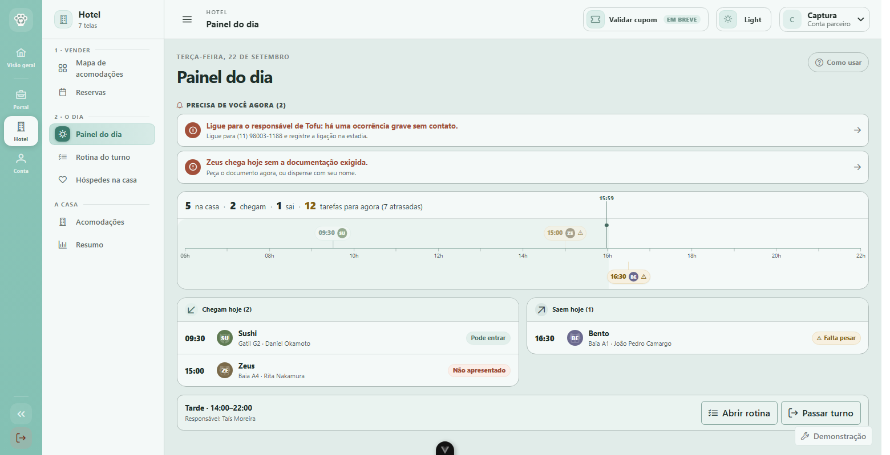
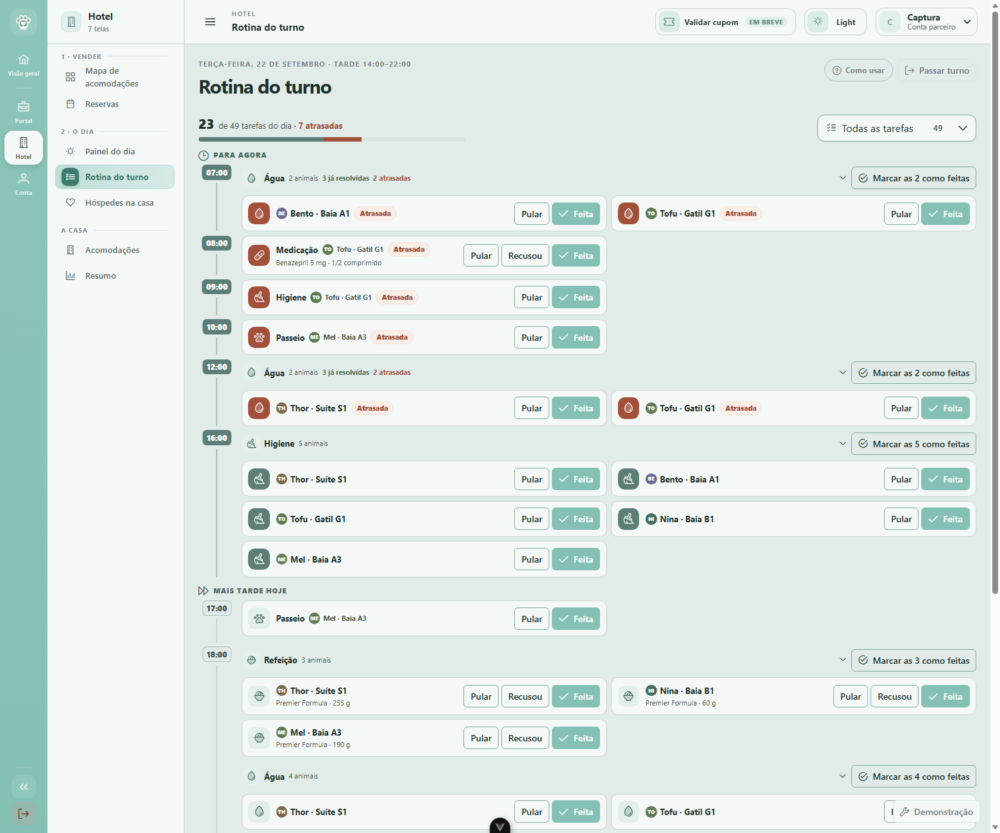
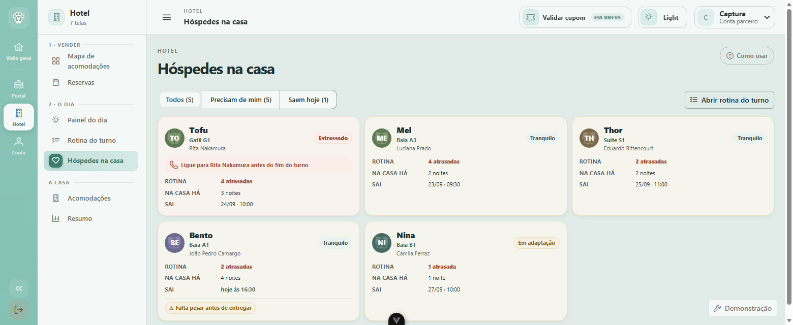
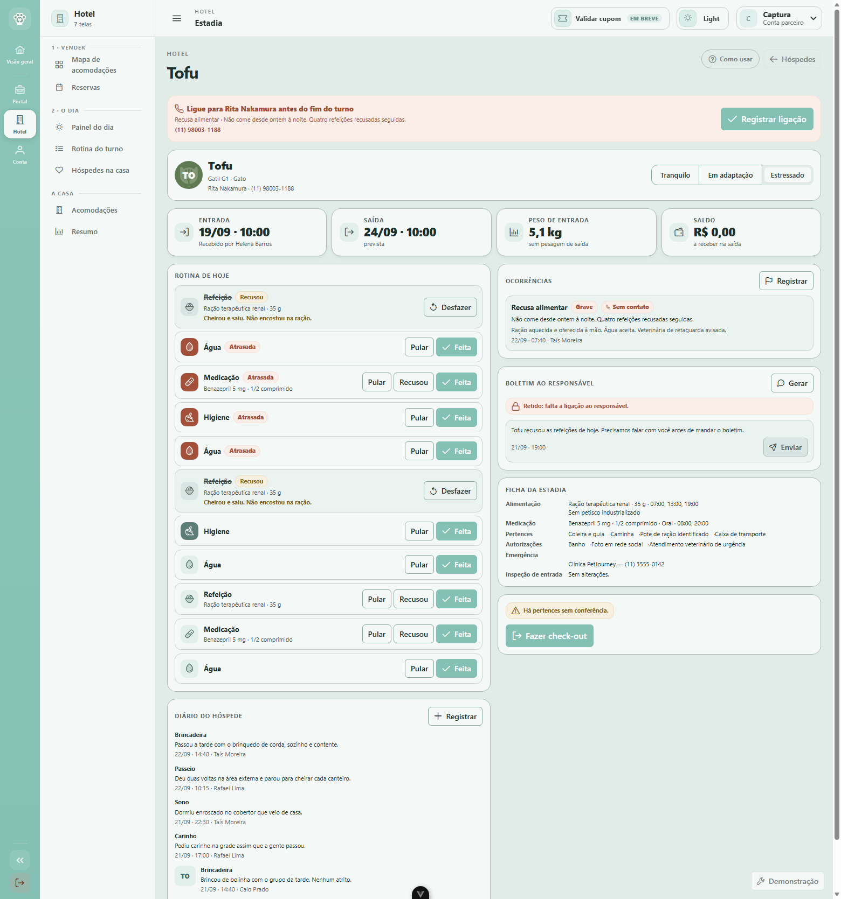
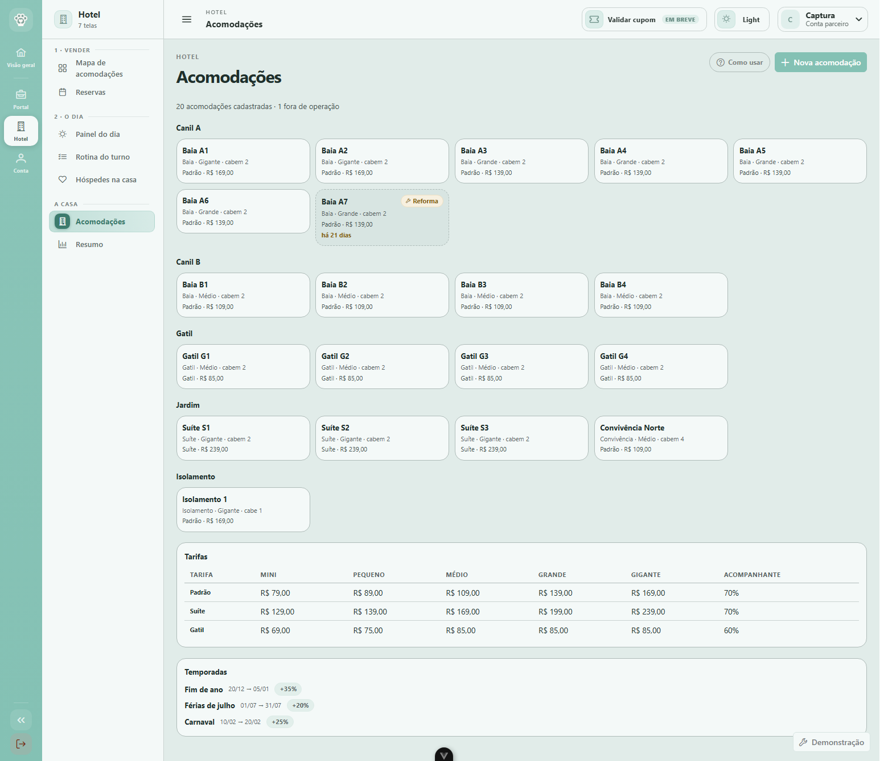
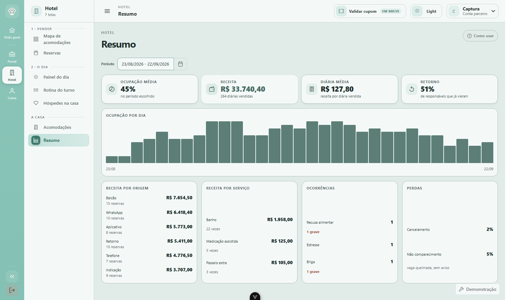

PetJourney · Módulo hotel
Este documento é para quem nunca usou um sistema de hospedagem de animais. Ele conta o que acontece num hotel ao longo de uma semana, e mostra a tela que responde a cada momento. Todas as imagens são do sistema rodando de verdade.
Um hotel de animais faz sempre a mesma coisa, nesta ordem: vende um período, recebe o animal, cuida dele por alguns dias e entrega de volta. Todas as telas do sistema cabem nesses quatro momentos — e é por isso que o menu está organizado assim, e não por "cadastros" e "relatórios".
Um hotel cheio erra sempre nos mesmos quatro pontos. Não são detalhes técnicos — cada um deles é um cliente perdido, e os quatro estão impedidos por regra, não por lembrete.
A situação: é o primeiro dia de quem vai operar o hotel. Ninguém leu manual nenhum.
Houve aqui uma tela "Como funciona", primeira do menu, que explicava o fluxo inteiro num lugar só. Ela saiu, e por um motivo que vale dizer em voz alta: ensinava longe do que ensinava. Quem lia "a coluna de documentação é ordenável" ainda não tinha visto coluna nenhuma, e quando ia trabalhar a tela de ensino tinha ficado para trás.
No lugar dela, toda tela tem um botão "Como usar" no canto superior direito. Ele escurece o resto da página, acende uma parte de cada vez e explica aquela parte ali mesmo — do cabeçalho até a última seção, na ordem em que se lê a tela. São quatro ou cinco passos por tela, com "Anterior" e "Próximo", e o Esc fecha a qualquer momento. Não roda sozinho na primeira visita e não guarda "já viu": a pergunta "o que é esse selo âmbar?" chega no segundo mês, não no primeiro minuto, e no segundo mês o botão continua lá.
A cena: toca o telefone. "Oi, vocês têm vaga para o meu labrador do dia 23 ao dia 26?"
Esta é a tela mais importante do sistema, e a que mais se parece com o que um hotel de verdade usa. Cada linha é uma acomodação. Cada coluna é uma noite. As barras verdes são o que já está vendido — e o que você procura é o espaço vazio entre elas.
No topo, a procura é escrita como uma frase: "tenho um cão de porte grande, de tal dia a tal dia". A resposta aparece do lado, inteira: "12 acomodações servem". As linhas que servem ficam acesas; as que não servem ficam apagadas, mas continuam visíveis — porque quem está no telefone precisa enxergar as outras opções quando a primeira não dá.

A cena: fim de tarde de quinta. "O que eu preciso resolver antes de amanhã?"
A lista de tudo o que está vendido. O que a torna útil não é a tabela — é a faixa amarela no topo: as chegadas dos próximos três dias que ainda não podem entrar. Três dias porque é o prazo em que ainda dá tempo de pedir o papel e o responsável conseguir trazer.

A cena: o cliente pergunta "e quanto vai ficar?"
O contrato da hospedagem, antes de virar estadia. A conta aparece linha a linha: as diárias, o acompanhante, os serviços, o acréscimo de temporada, o sinal, o saldo. Um total sozinho é uma conta que o cliente não confere e que a recepção não consegue defender.

A cena: oito da manhã. Você abre o sistema e quer saber como vai ser o dia.
Não é um resumo: é a lista do que fazer hoje. No topo fica o que não pode esperar, e cada item é um botão que leva ao lugar onde se resolve — com o telefone já escrito. Abaixo, o dia desenhado como um dia: chegadas em cima, saídas embaixo, e uma linha vermelha em "agora".

A cena: você está no corredor do canil, com o celular numa mão e o pote de ração na outra.
A prancheta. Todas as tarefas de todos os hóspedes, organizadas por horário — porque às 8h alguém alimenta os dezoito, e não percorre dezoito fichas. Marcar custa um toque.

A cena: "como estão os meus cinco?"
Um cartão por animal, ordenados por quem precisa de você primeiro. O cartão inteiro muda de cor quando algo trava — um selo pequeno no canto não sobrevive a uma tela com doze cartões, porque o olho não lê canto.

A cena: o Tofu não come desde ontem. É um gato com doença renal, e o responsável está viajando.
Tudo sobre uma hospedagem numa tela só. No topo, o que trava — com o telefone e o botão que registra a ligação. Abaixo, a rotina do dia, as ocorrências, o recado que vai para o responsável, e a ficha de entrada com pertences, alimentação e autorizações.

A cena: a casa cresceu, você fez uma baia nova. E, no fim do mês, quer saber se valeu a pena abrir no feriado.
Duas telas que não são do dia a dia. Em Acomodações, você monta a própria casa: quantas baias, quem cabe em cada uma, quanto custa, e o que está em reforma. O sistema não adivinha isso — pergunta.


Dito em voz alta para não ser cobrado como esquecimento. Nada disto está no protótipo, e nenhum deles bloqueia a operação de um hotel:
| O quê | Por que ficou de fora |
|---|---|
| Emissão de nota fiscal | O sistema calcula e registra a conta; emitir é outro sistema. |
| Processar pagamento | Registra o que foi pago e como. Não passa cartão. |
| Câmera ao vivo | A suíte já diz que tem câmera; o vídeo em si não entra agora. |
| Creche (entra e sai no mesmo dia) | É outro produto, com outra grade e outro preço. O modelo já a comporta. |
| App do responsável | O hotel já registra tudo o que o app mostraria: diário, fotos, recados. Falta o outro lado. |
Todos os animais, responsáveis e reservas são de demonstração, gerados pelo próprio sistema. Eles mudam de data sozinhos — o "hoje" da tela é sempre hoje de verdade — e são sempre os mesmos, para que a demonstração não dependa de sorte.
Cinco situações difíceis estão plantadas de propósito e aparecem em qualquer dia: a vacina que vence no meio da estadia, a chegada sem documento, a ocorrência grave sem ligação, a saída tardia com pertence esquecido, e a baia parada há três semanas.
Protótipo do módulo hotel · PetJourney. As capturas são do sistema em execução; para
regenerá-las, ver docs/hotel/apresentacao/README.md.